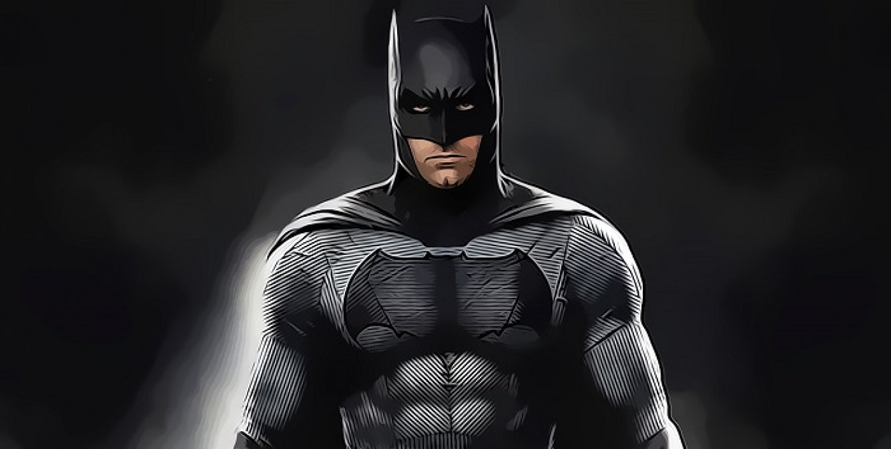

Batman é o principal heirói do mundo DC. Embora muitos digam que o fato dele não ter poder o torna um herói mais fraco, podemos dizer que sua força não é formada somente por musculos. Ele é extremamente estrategista e bem inteligente. Graças a essa inteligência ele consegue ser pário a qualquer oponente, independente do nível de poder que ele tenha.
Um belo exemplo que podemos descatar é tão querido Superman. Muitos dizem que não há herói mais poderoso que ele. Mas em muitas hq's ele foi derrotado pelo Batman. Batman é tão inteligente que já preveu que um dia ter de lutar contra seu amigo superman, e se preparou para isso usando uma das maiores fraquezas do Superman: a Criptonita.
